<meta charset="utf-8">
<title>Morning to Night Triptych</title>
<meta name="claude:viewport-fit-sides" content="cover">
<link rel="preconnect" href="https://fonts.googleapis.com">
<link rel="stylesheet" href="https://fonts.googleapis.com/css2?family=Baloo+2:wght@600&display=swap">
<style>
/* Layout: one review column; each view is a strip of real exports at the store's own proportions. */
:root {
  --page: #FFF6F1; --paper: #FFFDFB; --field: #FBEAE4; --edge: #F0DAD3; --edge-strong: #A07A72;
  --ink: #4A2C29; --ink-soft: #7D5A54; --primary: #F7A9BE; --on-primary: #4A2C29; --primary-ink: #B03158;
  --display: 'Baloo 2', ui-rounded, 'SF Pro Rounded', system-ui, sans-serif;
  --body: system-ui, -apple-system, 'Segoe UI', sans-serif;
  --mono: ui-monospace, 'SF Mono', Consolas, monospace;
}
@media (prefers-color-scheme: dark) { :root:not([data-theme="light"]) {
  --page: #221726; --paper: #2E2033; --field: #3A2A40; --edge: #44324A; --edge-strong: #9A80A3;
  --ink: #FFF3EE; --ink-soft: #CDB3C6; --primary: #F7A9BE; --on-primary: #221726; --primary-ink: #FF9EBB; color-scheme: dark } }
:root[data-theme="dark"] {
  --page: #221726; --paper: #2E2033; --field: #3A2A40; --edge: #44324A; --edge-strong: #9A80A3;
  --ink: #FFF3EE; --ink-soft: #CDB3C6; --primary: #F7A9BE; --on-primary: #221726; --primary-ink: #FF9EBB; color-scheme: dark }
body { background: var(--page); color: var(--ink); font: 16px/1.5 var(--body); }
main { max-width: 1120px; margin: 0 auto; padding-block: 32px 64px; padding-left: max(16px, env(safe-area-inset-left, 0px)); padding-right: max(16px, env(safe-area-inset-right, 0px)); display: grid; gap: 40px; }
h1, h2 { font-family: var(--display); font-weight: 600; text-wrap: balance; margin: 0; }
h1 { font-size: clamp(32px, 5vw, 48px); line-height: 1.05; }
h2 { font-size: 24px; line-height: 1.2; }
.lede { max-width: 62ch; margin: 8px 0 0; color: var(--ink-soft); }
.soft { color: var(--ink-soft); }
.note { margin: 4px 0 14px; color: var(--ink-soft); font-size: 15px; }
code { font: 13px/1.5 var(--mono); }
.controls { display: flex; flex-wrap: wrap; gap: 12px; }
.seg { display: inline-flex; padding: 3px; gap: 2px; background: var(--field); border: 1.5px solid var(--edge); border-radius: 999px; }
.seg button { font: 600 15px var(--body); color: var(--ink-soft); background: none; border: 1.5px solid transparent; border-radius: 999px; min-height: 40px; padding: 0 18px; cursor: pointer; }
.seg button[aria-pressed="true"] { color: var(--ink); background: var(--paper); border-color: var(--edge-strong); }
.seg button:focus-visible, .carousel:focus-visible { outline: 3px solid var(--primary-ink); outline-offset: 2px; }
.set { display: grid; gap: 40px; }
.shot { display: block; width: 100%; aspect-ratio: var(--ratio); border-radius: 6%/2.8%; background: var(--field); }
.search { max-width: 430px; background: var(--paper); border: 1.5px solid var(--edge); border-radius: 22px; padding: 14px; display: grid; gap: 12px; }
.listing { display: grid; grid-template-columns: 56px 1fr auto; gap: 12px; align-items: center; }
.listing div { display: grid; min-width: 0; font-size: 15px; line-height: 1.3; }
.listing .soft { font-size: 13px; }
.icon { width: 56px; height: 56px; border-radius: 13px; }
.get { font: 700 14px var(--body); color: var(--primary-ink); background: var(--field); border-radius: 999px; padding: 5px 16px; }
.three { display: grid; grid-template-columns: repeat(3, 1fr); gap: 8px; }
.three .shot { border-radius: 8%/3.6%; }
.carousel { display: flex; gap: 12px; overflow-x: auto; scroll-snap-type: x mandatory; padding-bottom: 10px; }
.carousel .shot { flex: 0 0 clamp(200px, 30%, 300px); scroll-snap-align: start; }
.set[data-set^="ipad"] .carousel .shot { flex-basis: clamp(260px, 42%, 420px); }
.strip-wrap { overflow-x: auto; border-radius: 14px; border: 1.5px solid var(--edge); }
.strip { display: block; width: 100%; min-width: 760px; }
.table-wrap { overflow-x: auto; }
table { border-collapse: collapse; width: 100%; font-size: 15px; background: var(--paper); border: 1.5px solid var(--edge); border-radius: 14px; overflow: hidden; }
th, td { text-align: left; vertical-align: top; padding: 10px 14px; border-top: 1px solid var(--edge); }
th { font-size: 13px; color: var(--ink-soft); border-top: 0; }
.num { font-variant-numeric: tabular-nums; width: 2ch; }
.files { white-space: nowrap; }
footer { color: var(--ink-soft); font-size: 14px; max-width: 70ch; display: grid; gap: 6px; }
@media (prefers-reduced-motion: no-preference) { .carousel { scroll-behavior: smooth; } }
</style>
<main>
  <header>
    <h1>Morning to night</h1>
    <p class="lede">Valentine Pomodoro 1.4's App Store screenshots: one study day told across five panels, Pomo &amp; Doro living it from the milk-pink morning to the plum night. Every panel is an exact export, as App Store Connect receives it.</p>
  </header>
  <div class="controls">
    <div class="seg" role="group" aria-label="Language"><button id="lang-en" aria-pressed="true" data-lang="en">English</button><button id="lang-tr" aria-pressed="false" data-lang="tr">Türkçe</button></div>
    <div class="seg" role="group" aria-label="Device"><button id="dev-iphone" aria-pressed="true" data-device="iphone">iPhone</button><button id="dev-ipad" aria-pressed="false" data-device="ipad">iPad</button></div>
  </div>
  <section class="set" data-set="iphone-en" style="--ratio:1320 / 2868">
  <div class="view">
    <h2>In search results</h2>
    <p class="note">Search shows the first three side by side, so panels 1–3 are the triptych.</p>
    <div class="search">
      <div class="listing"><div><b>Valentine Pomodoro</b><span class="soft">Today's name on the store</span></div><span class="get">Get</span></div>
      <div class="three">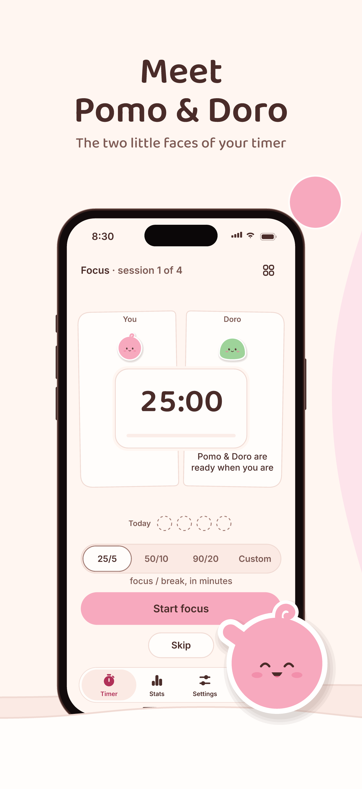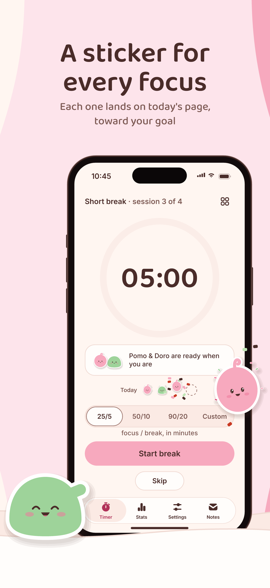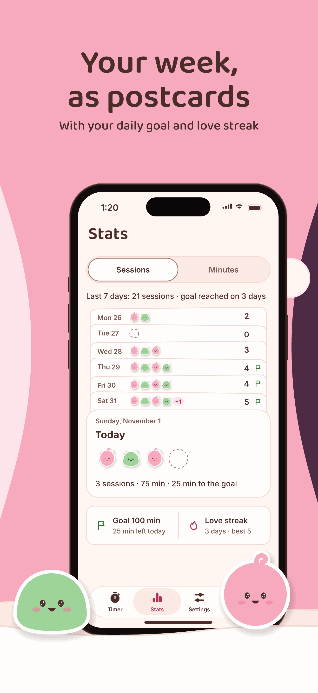</div>
    </div>
  </div>
  <div class="view">
    <h2>On the product page</h2>
    <p class="note">All five scroll as one carousel; the day carries on past the third panel. Scroll sideways.</p>
    <div class="carousel" tabindex="0" aria-label="The five screenshots">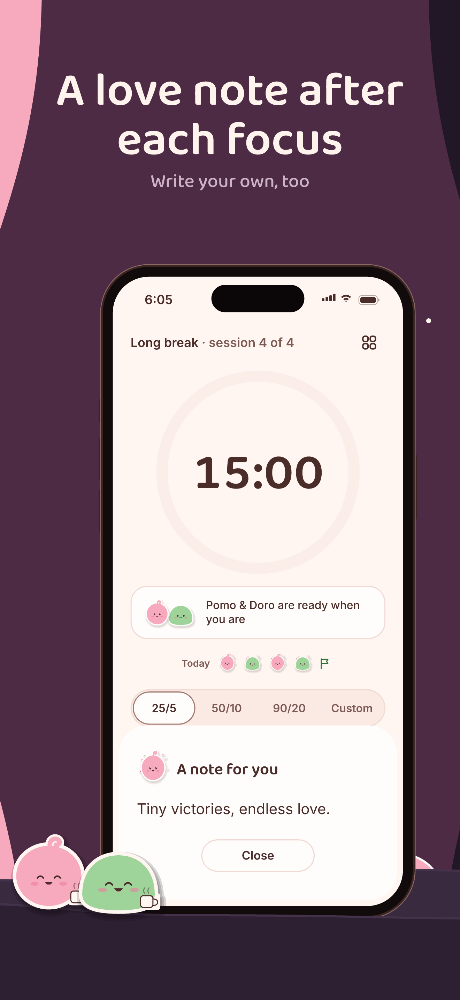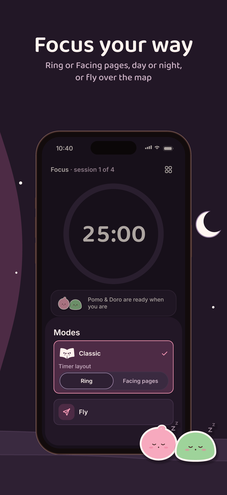</div>
  </div>
  <div class="view">
    <h2>The whole strip</h2>
    <p class="note">One VectorCraft drawing; each panel is a crop of it, with the store's gap between them.</p>
    <div class="strip-wrap">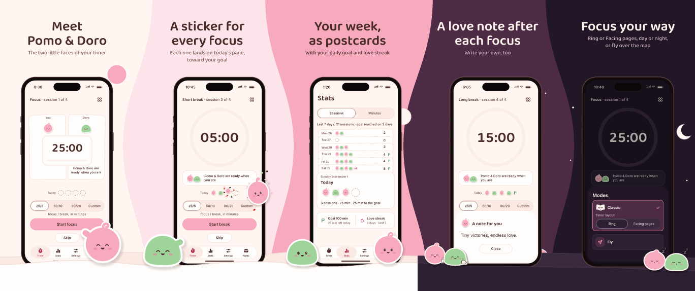</div>
  </div>
  <div class="view">
    <h2>Files for App Store Connect</h2>
    <p class="note">PNG, RGB with no alpha channel, at 1320 × 2868 and 1206 × 2622 px, in <code>art/out/store/</code>. Upload them in this order.</p>
    <div class="table-wrap"><table><thead><tr><th>#</th><th>Caption</th><th>Files</th></tr></thead><tbody><tr><td class="num">1</td><td><b>Meet Pomo &amp; Doro</b><br><span class="soft">The two little faces of your timer</span></td><td class="files"><code>store-iphone-en-01-1320x2868.png</code><br><code>store-iphone-en-01-1206x2622.png</code></td></tr><tr><td class="num">2</td><td><b>A sticker for every focus</b><br><span class="soft">Each one lands on today's page, toward your goal</span></td><td class="files"><code>store-iphone-en-02-1320x2868.png</code><br><code>store-iphone-en-02-1206x2622.png</code></td></tr><tr><td class="num">3</td><td><b>Your week, as postcards</b><br><span class="soft">With your daily goal and love streak</span></td><td class="files"><code>store-iphone-en-03-1320x2868.png</code><br><code>store-iphone-en-03-1206x2622.png</code></td></tr><tr><td class="num">4</td><td><b>A love note after each focus</b><br><span class="soft">Write your own, too</span></td><td class="files"><code>store-iphone-en-04-1320x2868.png</code><br><code>store-iphone-en-04-1206x2622.png</code></td></tr><tr><td class="num">5</td><td><b>Focus your way</b><br><span class="soft">Ring or Facing pages, day or night, or fly over the map</span></td><td class="files"><code>store-iphone-en-05-1320x2868.png</code><br><code>store-iphone-en-05-1206x2622.png</code></td></tr></tbody></table></div>
  </div>
</section>
  <section class="set" data-set="iphone-tr" style="--ratio:1320 / 2868" hidden>
  <div class="view">
    <h2>In search results</h2>
    <p class="note">Search shows the first three side by side, so panels 1–3 are the triptych.</p>
    <div class="search">
      <div class="listing"><div><b>Valentine Pomodoro</b><span class="soft">Today's name on the store</span></div><span class="get">Get</span></div>
      <div class="three">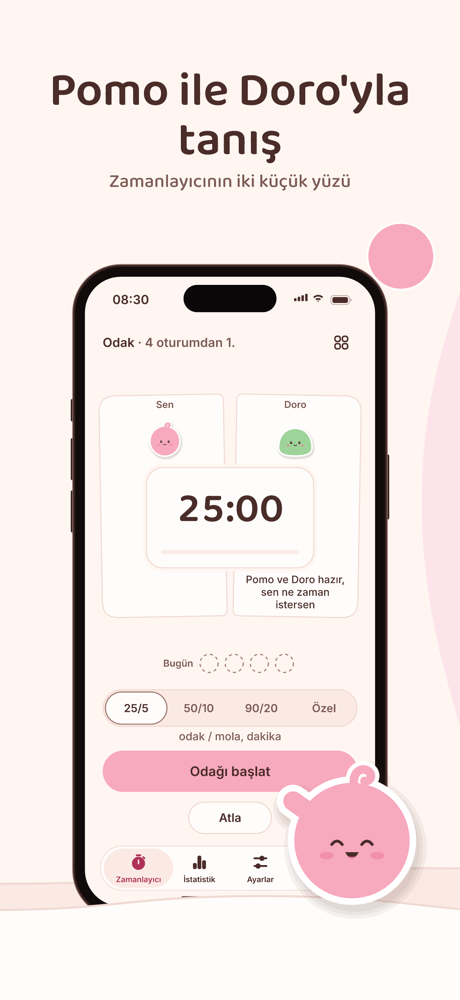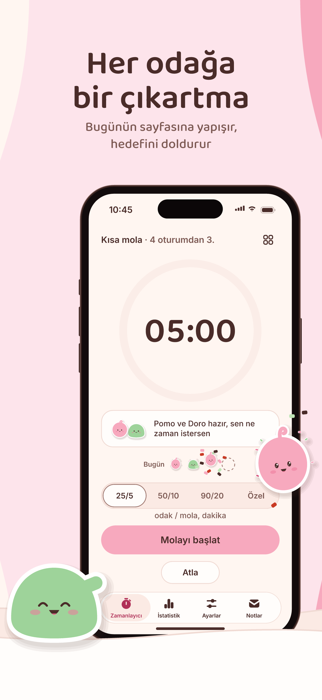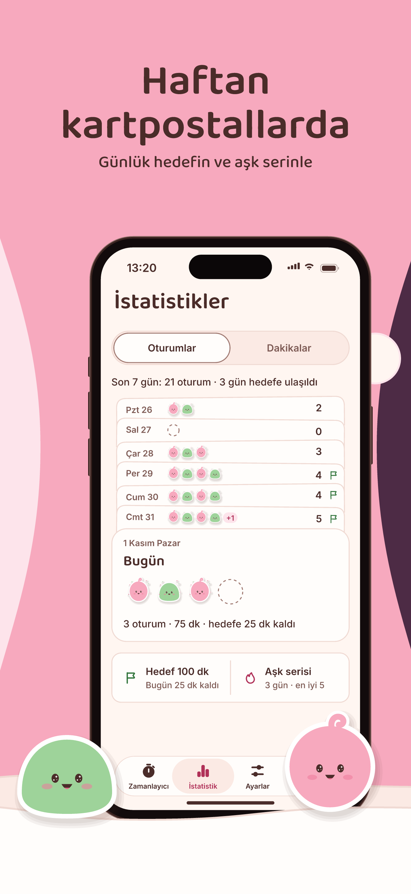</div>
    </div>
  </div>
  <div class="view">
    <h2>On the product page</h2>
    <p class="note">All five scroll as one carousel; the day carries on past the third panel. Scroll sideways.</p>
    <div class="carousel" tabindex="0" aria-label="The five screenshots">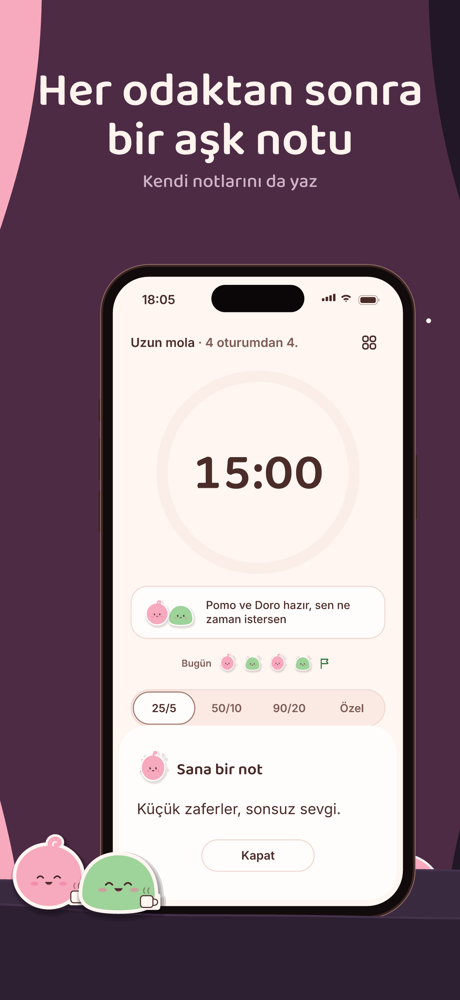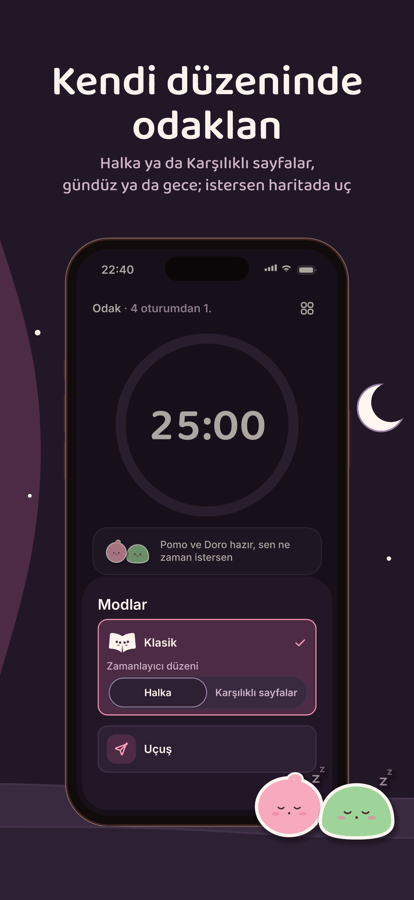</div>
  </div>
  <div class="view">
    <h2>The whole strip</h2>
    <p class="note">One VectorCraft drawing; each panel is a crop of it, with the store's gap between them.</p>
    <div class="strip-wrap">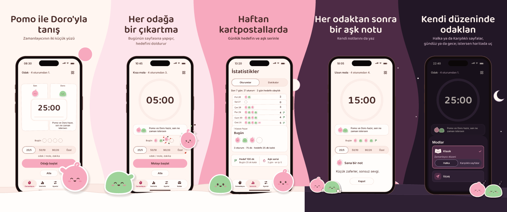</div>
  </div>
  <div class="view">
    <h2>Files for App Store Connect</h2>
    <p class="note">PNG, RGB with no alpha channel, at 1320 × 2868 and 1206 × 2622 px, in <code>art/out/store/</code>. Upload them in this order.</p>
    <div class="table-wrap"><table><thead><tr><th>#</th><th>Caption</th><th>Files</th></tr></thead><tbody><tr><td class="num">1</td><td><b>Pomo ile Doro'yla tanış</b><br><span class="soft">Zamanlayıcının iki küçük yüzü</span></td><td class="files"><code>store-iphone-tr-01-1320x2868.png</code><br><code>store-iphone-tr-01-1206x2622.png</code></td></tr><tr><td class="num">2</td><td><b>Her odağa bir çıkartma</b><br><span class="soft">Bugünün sayfasına yapışır, hedefini doldurur</span></td><td class="files"><code>store-iphone-tr-02-1320x2868.png</code><br><code>store-iphone-tr-02-1206x2622.png</code></td></tr><tr><td class="num">3</td><td><b>Haftan kartpostallarda</b><br><span class="soft">Günlük hedefin ve aşk serinle</span></td><td class="files"><code>store-iphone-tr-03-1320x2868.png</code><br><code>store-iphone-tr-03-1206x2622.png</code></td></tr><tr><td class="num">4</td><td><b>Her odaktan sonra bir aşk notu</b><br><span class="soft">Kendi notlarını da yaz</span></td><td class="files"><code>store-iphone-tr-04-1320x2868.png</code><br><code>store-iphone-tr-04-1206x2622.png</code></td></tr><tr><td class="num">5</td><td><b>Kendi düzeninde odaklan</b><br><span class="soft">Halka ya da Karşılıklı sayfalar, gündüz ya da gece; istersen haritada uç</span></td><td class="files"><code>store-iphone-tr-05-1320x2868.png</code><br><code>store-iphone-tr-05-1206x2622.png</code></td></tr></tbody></table></div>
  </div>
</section>
  <section class="set" data-set="ipad-en" style="--ratio:2064 / 2752" hidden>
  <div class="view">
    <h2>In search results</h2>
    <p class="note">Search shows the first three side by side, so panels 1–3 are the triptych.</p>
    <div class="search">
      <div class="listing"><div><b>Valentine Pomodoro</b><span class="soft">Today's name on the store</span></div><span class="get">Get</span></div>
      <div class="three">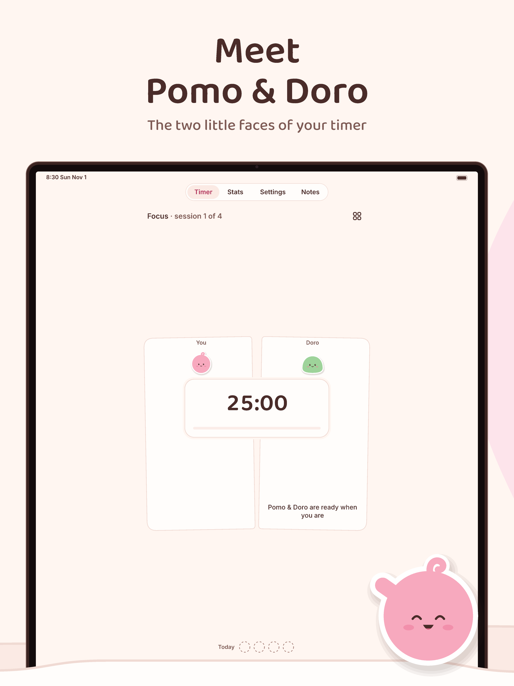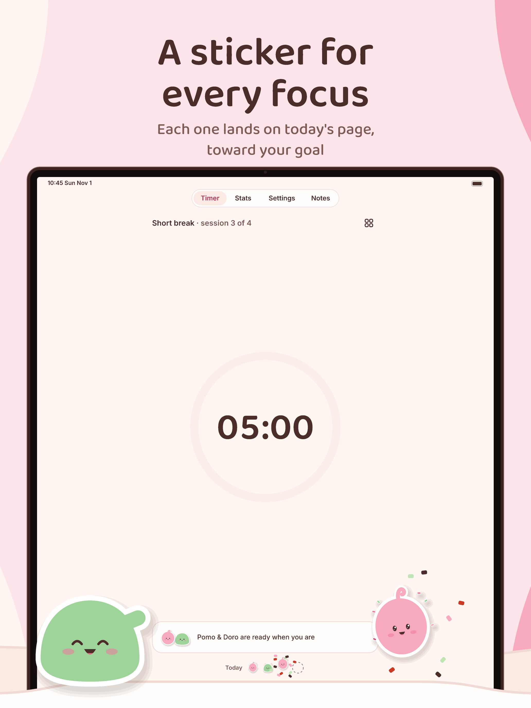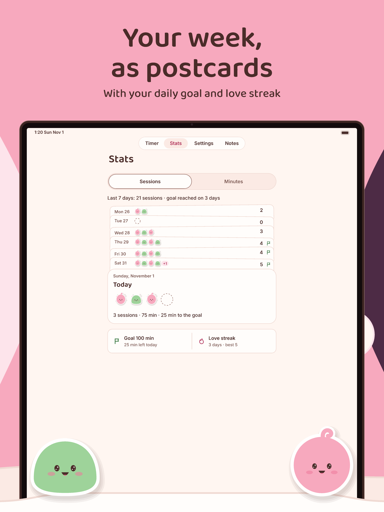</div>
    </div>
  </div>
  <div class="view">
    <h2>On the product page</h2>
    <p class="note">All five scroll as one carousel; the day carries on past the third panel. Scroll sideways.</p>
    <div class="carousel" tabindex="0" aria-label="The five screenshots">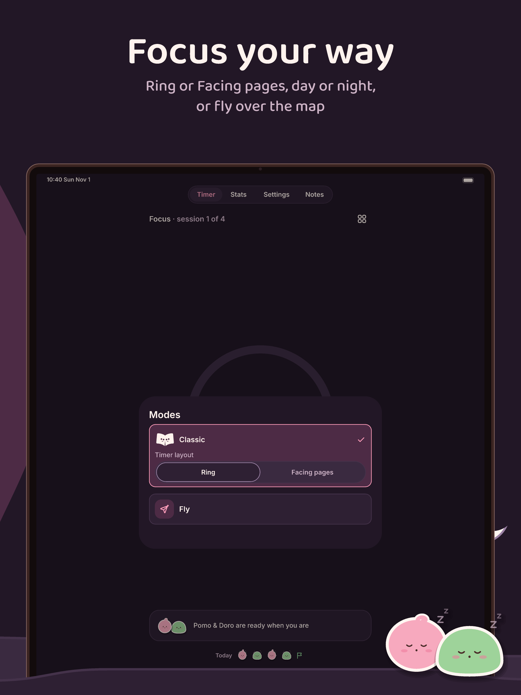</div>
  </div>
  <div class="view">
    <h2>The whole strip</h2>
    <p class="note">One VectorCraft drawing; each panel is a crop of it, with the store's gap between them.</p>
    <div class="strip-wrap"></div>
  </div>
  <div class="view">
    <h2>Files for App Store Connect</h2>
    <p class="note">PNG, RGB with no alpha channel, at 2064 × 2752 px, in <code>art/out/store/</code>. Upload them in this order.</p>
    <div class="table-wrap"><table><thead><tr><th>#</th><th>Caption</th><th>Files</th></tr></thead><tbody><tr><td class="num">1</td><td><b>Meet Pomo &amp; Doro</b><br><span class="soft">The two little faces of your timer</span></td><td class="files"><code>store-ipad-en-01-2064x2752.png</code></td></tr><tr><td class="num">2</td><td><b>A sticker for every focus</b><br><span class="soft">Each one lands on today's page, toward your goal</span></td><td class="files"><code>store-ipad-en-02-2064x2752.png</code></td></tr><tr><td class="num">3</td><td><b>Your week, as postcards</b><br><span class="soft">With your daily goal and love streak</span></td><td class="files"><code>store-ipad-en-03-2064x2752.png</code></td></tr><tr><td class="num">4</td><td><b>A love note after each focus</b><br><span class="soft">Write your own, too</span></td><td class="files"><code>store-ipad-en-04-2064x2752.png</code></td></tr><tr><td class="num">5</td><td><b>Focus your way</b><br><span class="soft">Ring or Facing pages, day or night, or fly over the map</span></td><td class="files"><code>store-ipad-en-05-2064x2752.png</code></td></tr></tbody></table></div>
  </div>
</section>
  <section class="set" data-set="ipad-tr" style="--ratio:2064 / 2752" hidden>
  <div class="view">
    <h2>In search results</h2>
    <p class="note">Search shows the first three side by side, so panels 1–3 are the triptych.</p>
    <div class="search">
      <div class="listing"><div><b>Valentine Pomodoro</b><span class="soft">Today's name on the store</span></div><span class="get">Get</span></div>
      <div class="three">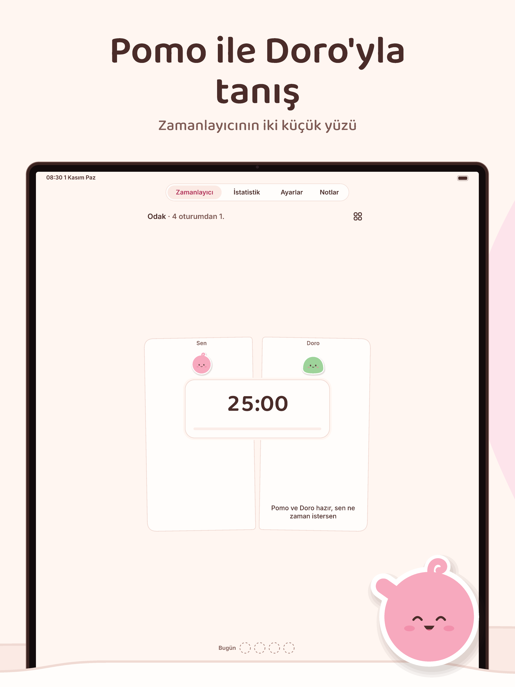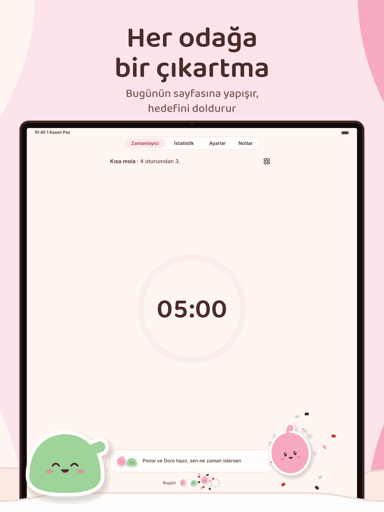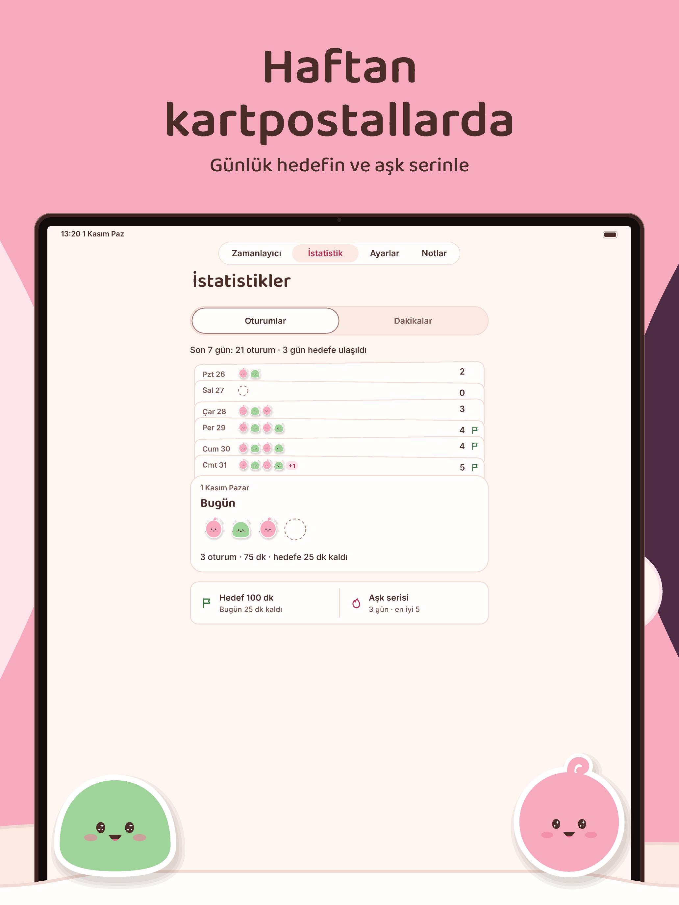</div>
    </div>
  </div>
  <div class="view">
    <h2>On the product page</h2>
    <p class="note">All five scroll as one carousel; the day carries on past the third panel. Scroll sideways.</p>
    <div class="carousel" tabindex="0" aria-label="The five screenshots">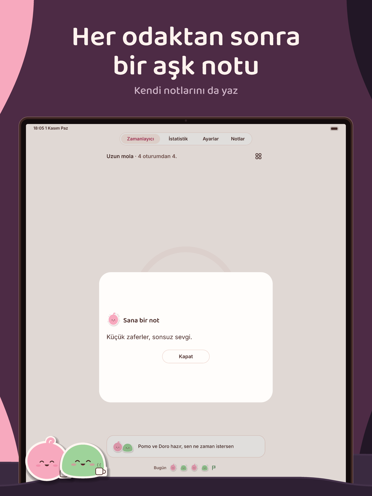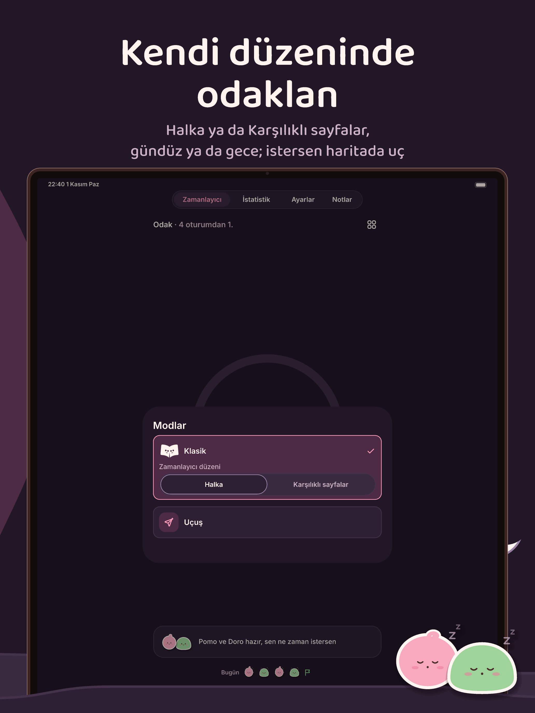</div>
  </div>
  <div class="view">
    <h2>The whole strip</h2>
    <p class="note">One VectorCraft drawing; each panel is a crop of it, with the store's gap between them.</p>
    <div class="strip-wrap">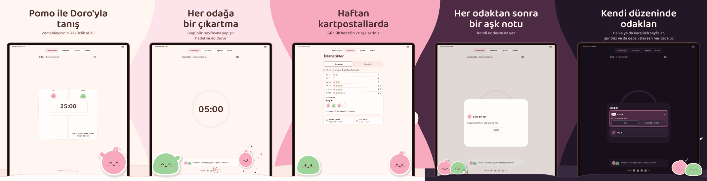</div>
  </div>
  <div class="view">
    <h2>Files for App Store Connect</h2>
    <p class="note">PNG, RGB with no alpha channel, at 2064 × 2752 px, in <code>art/out/store/</code>. Upload them in this order.</p>
    <div class="table-wrap"><table><thead><tr><th>#</th><th>Caption</th><th>Files</th></tr></thead><tbody><tr><td class="num">1</td><td><b>Pomo ile Doro'yla tanış</b><br><span class="soft">Zamanlayıcının iki küçük yüzü</span></td><td class="files"><code>store-ipad-tr-01-2064x2752.png</code></td></tr><tr><td class="num">2</td><td><b>Her odağa bir çıkartma</b><br><span class="soft">Bugünün sayfasına yapışır, hedefini doldurur</span></td><td class="files"><code>store-ipad-tr-02-2064x2752.png</code></td></tr><tr><td class="num">3</td><td><b>Haftan kartpostallarda</b><br><span class="soft">Günlük hedefin ve aşk serinle</span></td><td class="files"><code>store-ipad-tr-03-2064x2752.png</code></td></tr><tr><td class="num">4</td><td><b>Her odaktan sonra bir aşk notu</b><br><span class="soft">Kendi notlarını da yaz</span></td><td class="files"><code>store-ipad-tr-04-2064x2752.png</code></td></tr><tr><td class="num">5</td><td><b>Kendi düzeninde odaklan</b><br><span class="soft">Halka ya da Karşılıklı sayfalar, gündüz ya da gece; istersen haritada uç</span></td><td class="files"><code>store-ipad-tr-05-2064x2752.png</code></td></tr></tbody></table></div>
  </div>
</section>
  <footer>
    <p>The screens are drawn in VectorCraft from the app's own tokens and strings. The system face (SF Pro) is set in Inter; Baloo 2 is the app's own. The day's data is a realistic example: a 100-minute goal, a week of 21 sessions, the default love notes.</p>
    <p>iPad: the app runs its phone column on iPad (no iPad layout in 1.4), and no iPad capture exists to check against, so these screens follow the code's layout rules.</p>
  </footer>
</main>
<script>
(() => {
  const state = { lang: 'en', device: 'iphone' };
  const show = () => {
    document.querySelectorAll('.set').forEach((el) => { el.hidden = el.dataset.set !== state.device + '-' + state.lang; });
    document.querySelectorAll('[data-lang]').forEach((b) => b.setAttribute('aria-pressed', String(b.dataset.lang === state.lang)));
    document.querySelectorAll('[data-device]').forEach((b) => b.setAttribute('aria-pressed', String(b.dataset.device === state.device)));
  };
  document.querySelectorAll('[data-lang]').forEach((b) => b.addEventListener('click', () => { state.lang = b.dataset.lang; show(); }));
  document.querySelectorAll('[data-device]').forEach((b) => b.addEventListener('click', () => { state.device = b.dataset.device; show(); }));
})();
</script>
